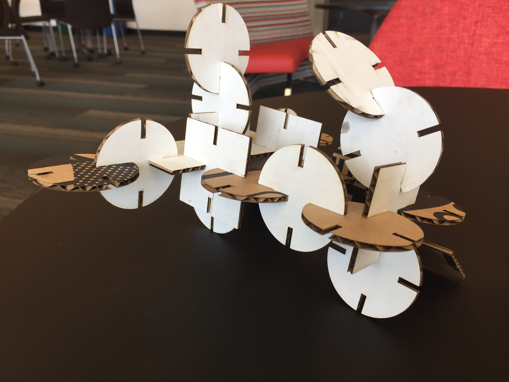

CAD Model using Rhino/Grasshopper and Laser-cut outcome
 & nbsp
I started with creating an updated version of my previous design.
I created a round shape first with 12 equidistant notches, saved the rhino file but didn’t realize that I had to save the grasshopper file separately as well. Redid the circle, and found it difficult to make a moon shape in rhino with notches in the position I wanted. I did this for 2 days and then realized it was better to make something new and simple for this assignment as Rhino-Grasshopper has a steep learning curve.
Thanks Nadia for providing the tutorial, it was very helpful!
I created a circle and square shape with 4 notches each.
Circle Shape screenshot - Grasshopper